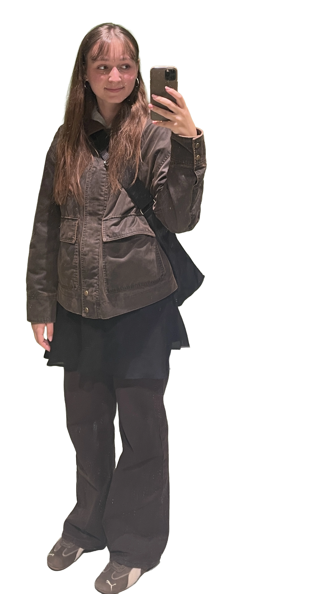

Mona Taherzadeh
Hej, jeg hedder Mona!
Jeg er studerende på Multimediedesigneruddannelsen på 1. semester på Erhvervsakademi København. Før jeg begyndte på uddannelsen, studerede jeg til datamatiker. Selvom jeg fandt programmering spændende, savnede jeg den kreative del af arbejdet, og derfor valgte jeg at skifte til multimediedesign.
På 1. semester har jeg arbejdet med både design og udvikling af digitale løsninger. Jeg har blandt andet opnået erfaring med:
- HTML, CSS og JavaScript
- Figma
- Adobe Illustrator og vektorgrafik
- Adobe Photoshop
- Adobe After Effects
- GitHub og GitHub Pages
Gennem semesteret har jeg fået en større forståelse for brugercentreret design, designprocesser og betydningen af at arbejde iterativt med feedback og test. Jeg har lært at kombinere mine tekniske kompetencer med kreative metoder for at udvikle brugervenlige digitale løsninger. Min største interesse ligger fortsat inden for frontend-udvikling, hvor jeg kan forene design og programmering i samme proces.
